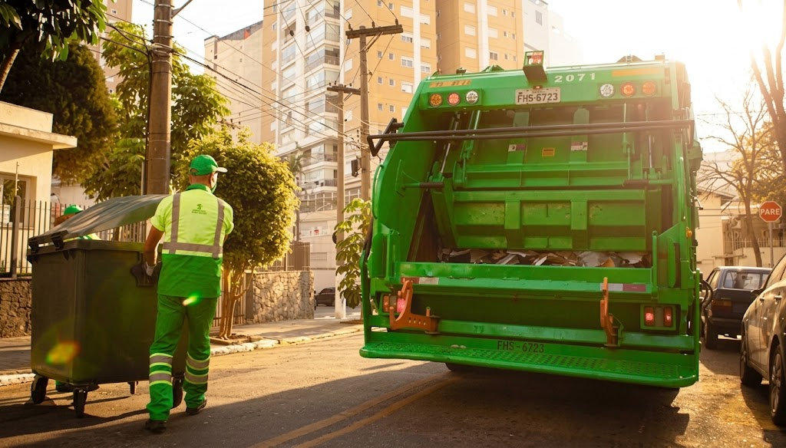

Gestão Sustentável e Pontual de Resíduos
A WasteWise promove uma gestão de resíduos sustentável e eficiente, incentivando o descarte correto, o reaproveitamento e a redução dos impactos ambientais.

Organização
Cidades limpas e organizadas, com processos claros e eficientes para o gerenciamento de resíduos.
Previsibilidade
Horário e dias certos para coleta e descarte de resíduos.
Responsabilidade
Responsabilidade e sustentabilidade.
CRONOGRAMA
- COLETA COMUM
- COLETA RECICLÁVEL
- CENTRAL
- ZONA SUL
- ZONA NORTE
- ZONA LESTE
- Seg, Quar, Sex — 07:00 às 09:00
- Ter, Qui, Sáb — 08:00 às 10:00
- Seg, Quar, Sex — 13:00 às 15:00
- Segunda a Sábado — 06:00 às 08:00
- Ter e Qui — 14:00 às 16:00
- Ter e Qui — 14:00 às 16:00
- Sexta — 10:00 às 12:00
- Ter e Qui — 16:00 às 18:00
CATEGORIAS
Resíduos Domiciliares
Resíduos Orgânicos
Restos de alimentos, cascas e borra de café. Vão para a coleta comum ou compostagem.
Resíduos Recicláveis
Plástico, papel, vidro e metal limpos. Vão para a coleta seletiva.
Resíduos Perigosos
Pilhas, baterias, lâmpadas e remédios. Devem ser levados aos ecopontos.
Resíduos Rejeitos
Lixo do banheiro e materiais engordurados. Vão para o aterro sanitário na coleta comum.
Resíduos Especiais
Resíduos Volumosos
Móveis velhos, colchões e eletrodomésticos. Devem ser agendados para recolha ou levados diretamente ao Ecoponto.
Entulho de Construção
Restos de obras, tijolos, azulejos e cimento em pequenas quantidades. Devem ser descartados nos pontos de entrega voluntária da cidade.
Resíduos Verdes
Podas de árvores, restos de jardinagem e folhagem. Requerem descarte próprio para compostagem ou recolha agendada.
DESCARTE
Recicláveis
Garrafa Pet e Plásticos
Lave, amasse e coloque na coleta seletiva (com a tampa).
Caixas e Papéis
Dobre para economizar espaço e coloque secos na coleta seletiva.
Latas de Alumínio
Enxágue, empurre a tampa para dentro e vá para a coleta seletiva.
Vidro
Se estiver partido, embale num papelão identificado antes de ir para a coleta seletiva.
Não Recicláveis
Orgânicos
Embale em sacos pretos ou resistentes, feche bem e coloque na coleta comum nos dias informados.
Rejeitos
Restos de Alimentos
Coloque em sacos bem fechados para a coleta comum ou destine para a compostagem.
Resíduos Especiais
Pilhas e Baterias
Armazene em um recipiente seco e leve aos pontos de coleta em supermercados, lojas de eletrônicos ou ecopontos. Nunca jogue no lixo comum.
Lâmpadas Florescentes
Guarde na embalagem original ou envolva em papelão para não quebrar. Entregue em ecopontos ou locais de venda habilitados para logística reversa.
Medicamentos Vencidos
Mantenha nas embalagens e leve aos pontos de recolha em farmácias ou unidades de saúde. Não jogue no vaso sanitário nem no lixo comum.
Óleo de cozinha usado
Espere esfriar, armazene em uma garrafa PET bem fechada e entregue em postos de coleta específicos, ecopontos ou cooperativas.
Lixo Eletrônico
Leve os aparelhos quebrados ou antigos a pontos de coleta de e-lixo ou mutirões de reciclagem eletrônica da cidade.
Tintas, Solventes e Produtos Químicos
Não despeje em ralos ou no solo. Entregue as sobras e latas nos postos de recolha de resíduos perigosos ou ecopontos municipais.